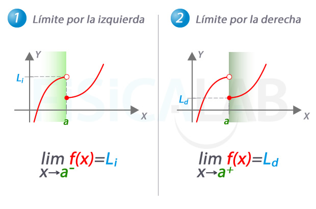

- Ejemplo:
Un límite literal se refiere a un límite en el que la función, el punto al que se acerca la variable independiente, o el valor del límite mismo están representados por letras (literales) en lugar de números específicos. En esencia, se trata de evaluar el comportamiento de una función f(x) cuando x se acerca a un valor representado por una letra, digamos a, y el resultado de ese límite también se expresa en términos de otras letras o constantes.

En este caso, estamos calculando la derivada de la función f(x) = x2 utilizando la definición del límite. Aunque el límite se evalúa cuando h se acerca a 0 (un número específico), la función y el resultado se expresan en términos de la literal x.